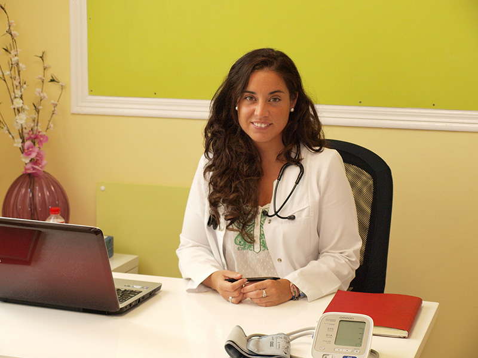
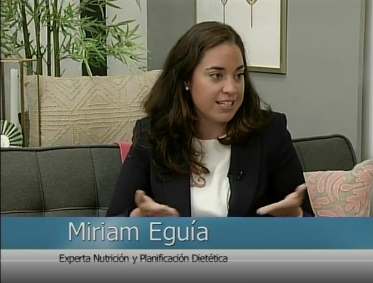

Sobre mí
Hola, soy Miriam Eguía.
«Una adecuada alimentación repercutirá en nuestra calidad de vida y en la mejora de la salud, estemos sanos o enfermos.»
Licenciada en Medicina por la Universidad de Cantabria, Experta en Nutrición y Planificación Dietética por la Universidad Complutense de Madrid. También Especialista en Nutrición Celular Activa por la AFMO y Posgrado en Neuropsicología Clínica por el ISEP de Barcelona.
Soy médico y madre, por partida doble, a tiempo completo. Entiendo las situaciones del día a día en la alimentación de los niños, la organización del tiempo, la familia y la conciliación.
Desde el inicio de mi carrera me interesó el trato con el paciente, la prevención y la comunicación para mejorar la salud. En la nutrición encontré respuestas a muchos de los problemas que nos encontramos en consulta y en casa.
He tratado a cientos de pacientes en mi consulta y en centros especializados, y he colaborado en radio, prensa y televisión. Cada persona es distinta: abrimos historia médica y hacemos una evaluación nutricional completa.
- Centro registrado Nº 06/2025/04344 · Consejería de Sanidad de Cantabria
- Colegiada Nº 393906532 · Colegio Oficial de Médicos de Cantabria
- Director técnico responsable: Dra. Miriam Eguía Llosa